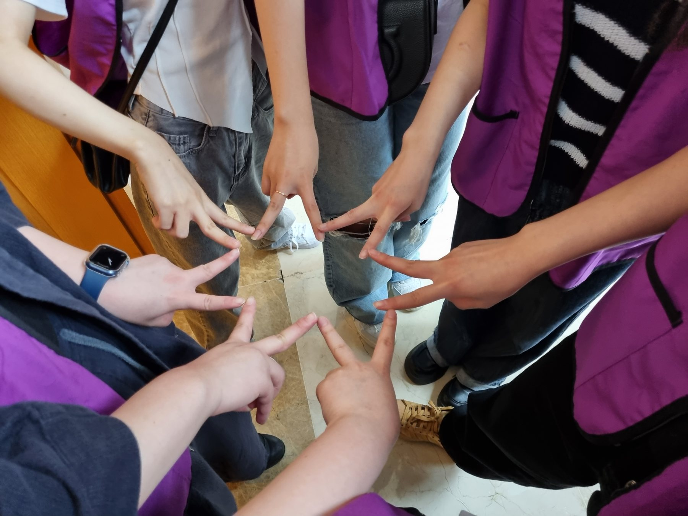
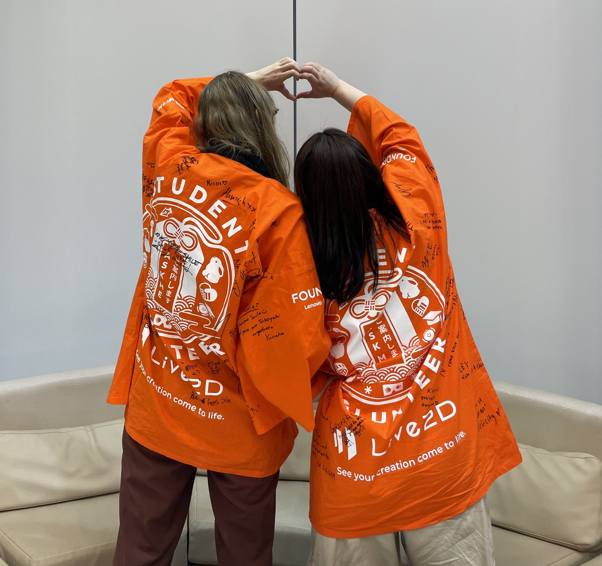
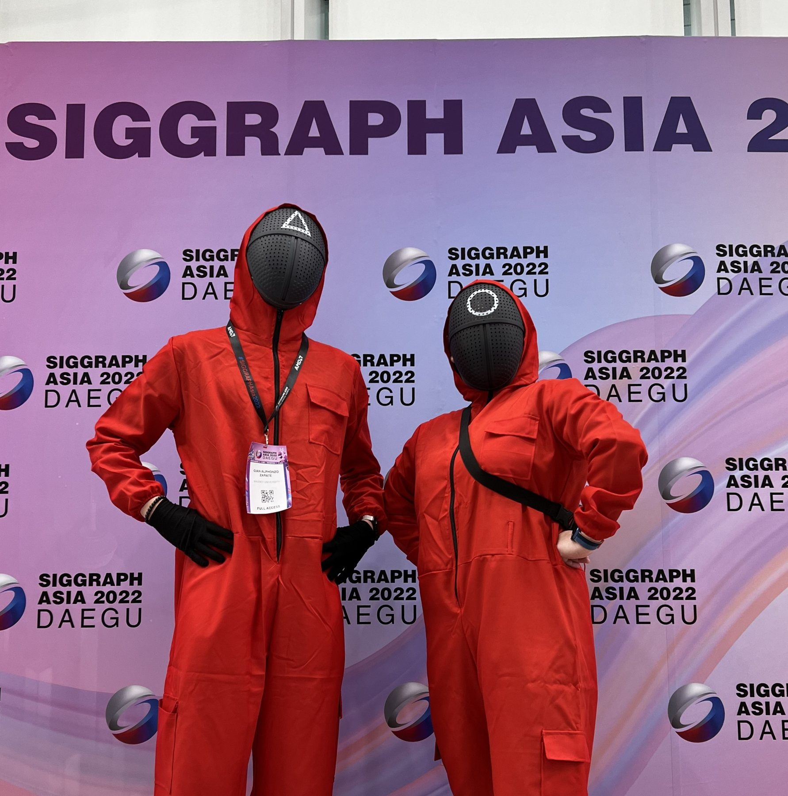
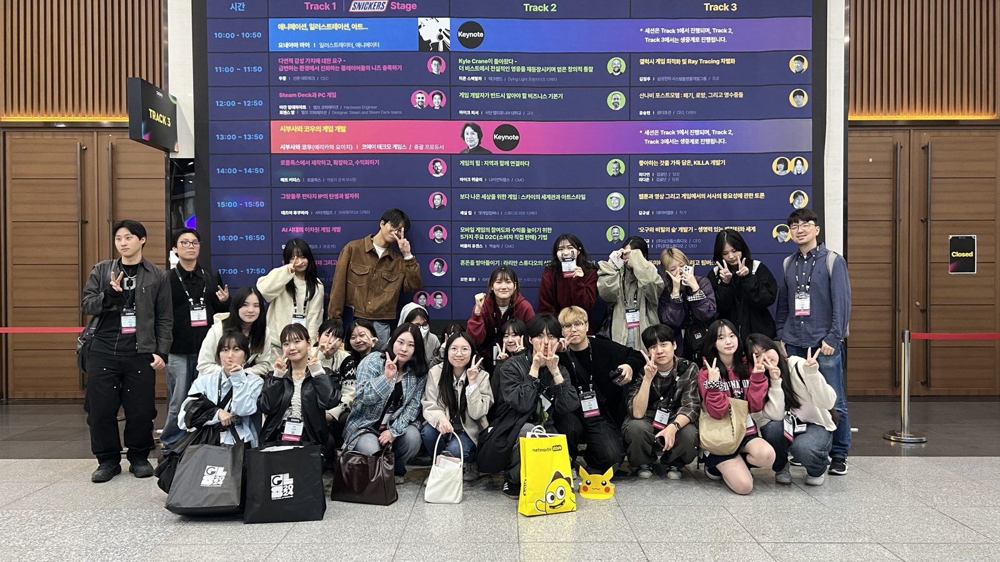
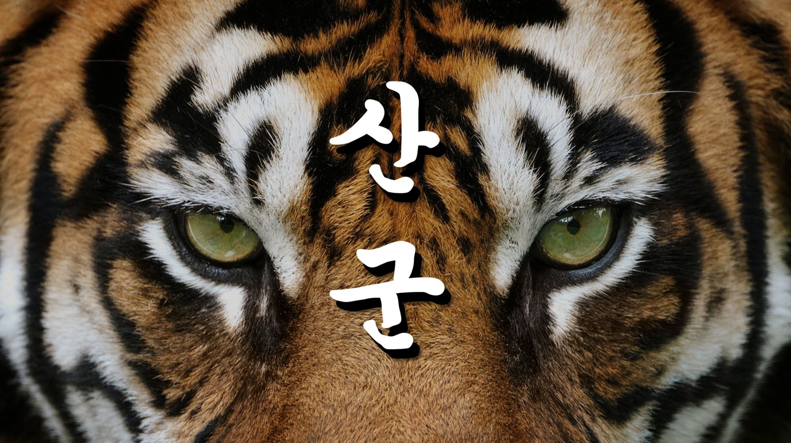
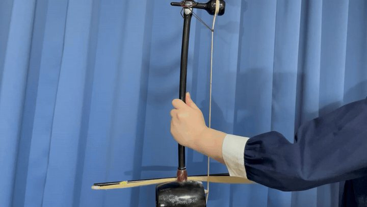
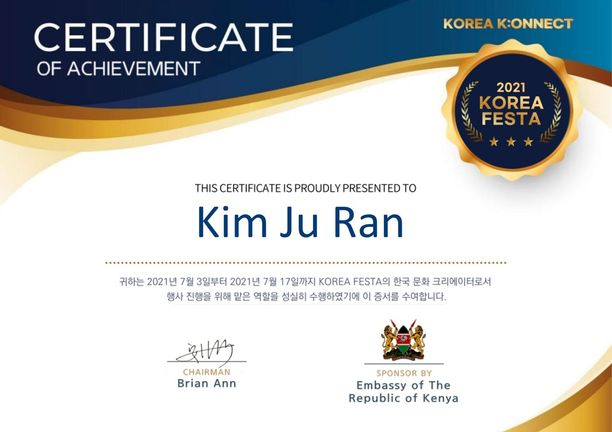

ACTIVITIES
활동
2022 – 현재CUCG Lab 학부연구생AI 그래픽스 · XR · 시뮬레이션 2021아리랑스쿨 기자단 ‘아리스토텔러스’ 7기전통문화 기자단
2021아리랑스쿨 기자단 ‘아리스토텔러스’ 7기전통문화 기자단 2022NVIDIA 딥러닝 교육 이수교육
2022NVIDIA 딥러닝 교육 이수교육

2024SIGGRAPH Asia 2024 도쿄 · 학생 자원봉사자(SV) 선발전시 · 등록 · 체험 부스
2022SIGGRAPH Asia 2022 대구 · 학생 자원봉사자(SV) 선발학회 운영 · 참가자 지원
2024G-STAR 2024 학과 탐방대탐방대
2024게임 개발 팀 LUL(Level Up Labs) 창립창립 · 팀 리드
2021 – 2023라온S 회장 · 학과 공식 소모임회장 · 지원사업 기획2021아리랑스쿨 기자단 ‘아리스토텔러스’ 7기전통문화 기자단
2021안녕 코리아 · 한국문화 서포터즈외국인 대상 한국문화 수업
2021 – 2022스타티스트(STARTIST) · 창업대학 기관동아리 부회장부회장 · 홍보 영상2022NVIDIA 딥러닝 교육 이수교육NVIDIA 딥러닝 교육 이수
2025 – 2026GDGoC · 팀 리더 (반죽뭉치 · DevRel)팀 리더 2회